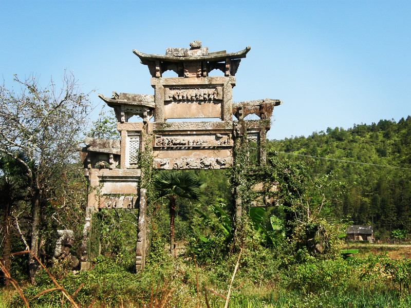
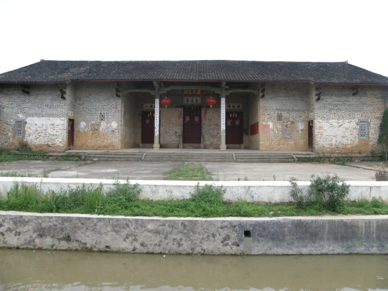

《越国世家》宗祠，位于安远县长沙乡圆当村，始建明成化丁亥年（1467年）明万历，清康熙、乾隆、宣统和民国曾6次修整和增建，宗祠由门楼和三幢厅组成，门楼为硬山顶单昂建筑。底平面长8.9米。宽3.8米。三幢厅由前、中、后三幢厅堂组成。纵深43.3米，内宽9.4米。前幢厅内有木匾二块，一是清道光三十年立的“圣旨”匾，二是清代诗人钟元弦手书“画获遗辉”匾，门楼左侧7米处有一建于乾隆五年的二柱，无楼式石牌坊，高4.68米，24米，2004年4月有公布为县文物保护单位。

水头“三世节孝”牌坊，位于安远县天心镇水头村。建于清朝乾隆十三年。该坊为四柱三间五楼，红条石砌成，高6.5米、面阔5.95米，庑殿式顶、斗拱出檐，明间正楼檐下竖匾镌“恩荣”二字、背面置“圣旨”牌，二层楼字牌上横刻“三世节孝”四字，额坊上竖刻“ 旌表儒童廖穆生之妻唐氏，邑庠生廖羽丰之妻钟氏、儒童廖士宾之妻钟氏节孝坊”等小字，额坊、石柱上刻有浮雕图案。立柱前后竖置抱鼓石，左右两侧放置石狮一对。

石口卢氏宗祠位于江西省赣州市安远县凤山乡石口村，始建于明代，清代扩建。解放后卢氏村民集资又进行过修茸，宗祠砖木结构，风火墙，歇山顶。祠为一进三厅，内有天井，上厅十柱承托梁架，两侧建有厢房，厅正面的楼阁三斗拱承托出檐。面宽广40米，进深100米，占地面积4000平方米。是我县现存最大的客家宗祠。2013年2月公布为县级文物保护单位，其保护范围为宗祠四周20米。